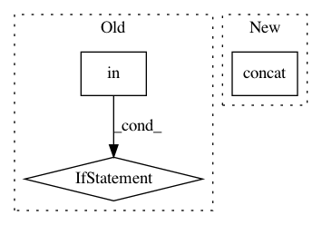

fa93a0d733bd88e236e2b5090c433088b729d113,QUANTAXIS/QAFetch/QATdx.py,,QA_fetch_get_stock_list,#Any#Any#Any#,698
Before Change
@retry(stop_max_attempt_number=3, wait_random_min=50, wait_random_max=100)
def QA_fetch_get_stock_list(type_="stock", ip=None, port=None):
ip, port = get_mainmarket_ip(ip, port)
if type_ in ["stock", "gp"]:
res = pd.read_csv("http://data.yutiansut.com/stock_code.csv")
return res.assign(code=res.code.apply(lambda x: QA_util_code_tostr(x)))
api = TdxHq_API()
with api.connect(ip, port):
data = pd.concat(
[pd.concat([api.to_df(api.get_security_list(j, i * 1000)).assign(
After Change
if type_ in ["stock", "gp"]:
// res = pd.read_csv("http://data.yutiansut.com/stock_code.csv")
// return res.assign(code=res.code.apply(lambda x: QA_util_code_tostr(x)))
return pd.concat([sz, sh], sort=False).query(
"sec=="stock_cn"").sort_index().assign(
name=data["name"].apply(lambda x: str(x)[0:6]))
In pattern: SUPERPATTERN
Frequency: 3
Non-data size: 3
Instances
Project Name: QUANTAXIS/QUANTAXIS
Commit Name: fa93a0d733bd88e236e2b5090c433088b729d113
Time: 2020-08-04
Author: yutiansut@qq.com
File Name: QUANTAXIS/QAFetch/QATdx.py
Class Name:
Method Name: QA_fetch_get_stock_list
Project Name: chainer/chainercv
Commit Name: 827e12f3b9506e0f78cc79445441cd9d1f25c055
Time: 2018-04-24
Author: Hakuyume@users.noreply.github.com
File Name: chainercv/links/model/yolo/yolov3.py
Class Name: YOLOv3
Method Name: __call__
Project Name: analysiscenter/batchflow
Commit Name: 53f15232ed13154bc5338dc002b43c3c62547ea7
Time: 2017-11-12
Author: rhudor@gmail.com
File Name: dataset/models/tf/unet.py
Class Name: UNet
Method Name: upsampling_block